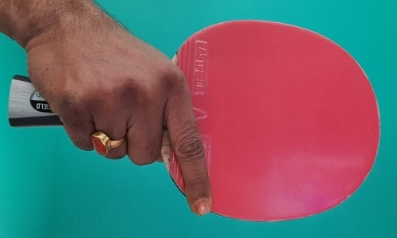
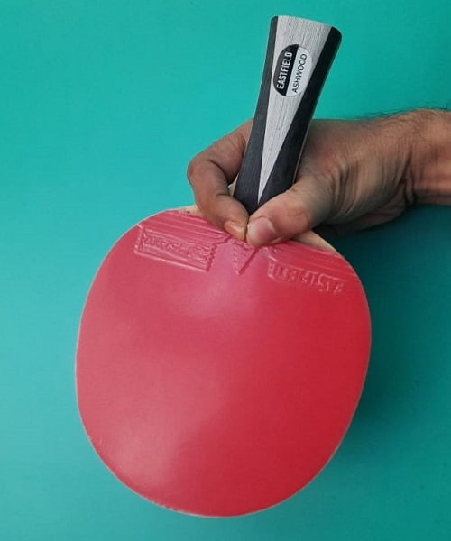
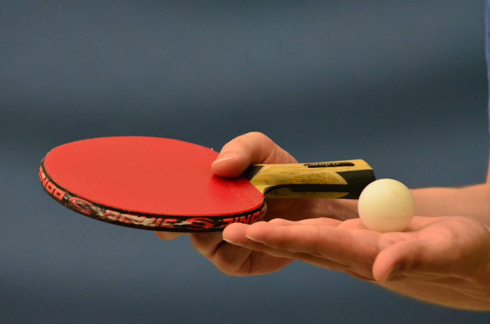
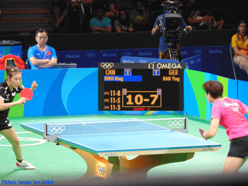

For the detailed info about the table tennis racket visit this page
2. Know the Table Tennis Grip
The most fundamental learning on “how to play table tennis” for a beginner, is the proper table tennis grip. A proper grip helps you fix the angle of your racket. You have control over the placement of the ball.
In table tennis, there are mainly two types of grips. One is Shakehand grip and the other one is Penhold grip.
Shakehand Grip
As the name suggests, in Shakehand grip, try to hold the bat in a way that you are shaking hands.

As in the figure above, hold the upper part of the handle with the middle finger, ring finger, and pinkie.
Place your index finger on the edge of the rubber ( As shown in the figure above).
Your thumb should be either on the blade just below the rubber or on the surface of the rubber.
When the thumb is on the blade, you have more freedom over the racket angle and you can adjust it as per your requirement on the stroke selection. This is the shallow Shakehand grip that is suitable for forehand stroke with more power and flexibility.
But when the thumb is on the rubber, it is a deep Shakehand grip that gives more control and power over your backhand strokes.
Penhold Grip
This type of grip is more popular in Asian countries mainly in China, Japan, and South Korea. It is much like you are holding a pen.

You have to curl the index finger and thumb around the edge of the paddle to form a ‘c’ shape and relax on one side of the rubber.
The other three fingers act as support on the other side of the rubber. When they are curled to rest on the rubber, it is the Chinese Penhold grip and when the fingers are straight, it is the Japanese Penhold grip.
Each type of grip has certain advantages and disadvantages against the other that you will find in this article
3. Develop Stance and Ready Position
Before the ball is in play, you have to ready with your stance.
Stand close to the table
Your legs should be slightly apart from your shoulders.
Bent your knees to make your center of gravity low for a good balance.
Forward your shoulders slightly with the racket in front of your body.
Your weight should be on your toes, not on the heels.
Point your free arm to support your balance.
Take your stance with your left foot slightly forward than the right foot (for the right-handers). As you will cover more strokes on the forehand side, this stance will give you more advantage.
The ready position is the position where you feel comfortable standing to cover the playing area. It is the position where you take your stance to receive the service.
After playing a shot during a rally, you should return to your ready position. From this position, you should watch your opponent’s movement and be able to move in any direction for the next stroke.
Take your stance slightly left from the center of the table as it is easy to cover the area on your forehand side. For a left-hander, the stance is slightly right from the center of the table.
Here are the essential rules that will restrict you from doing illegal serve.

Stand behind the end line of the table and take the ball on your open, flat palm.
Through the ball vertically for a minimum height of 16 cm or 6.3 inches.
At the time of falling, hit the ball for the first bounce on your court and the second bounce on the other side of the court after crossing over the net.
After bouncing on your side, if the ball clips the net and bounces on the other side, it is a “let” service and then you have to repeat your service.
Each player gets the chance for doing two consecutive services.
6. Table tennis Rules for Singles, an Essential Learning

The rules are a very important segment of your quarry on “How to play table tennis”. To win points, you have to obey these rules.
When you will return a ball, strike the ball only after the first bounce on your side.
The first bounce of your return must be on the opponent’s court.
If the ball touches the net but still makes the first bounce on the other side, it is a valid return.
The ball is allowed to touch the edge of the table but not the vertical side of the table.
The game consists of 11 points and it is tied at 10-10, a two points lead is a must to win the game.
A match consists of 3, 5, or 7 games.
7. Learn the Basic Serve
As a beginner, you should start with two basic serves, the forehand service, and the backhand service.
Forehand Serve
As a beginner, at first, try to hit the ball with your forehand side of the racket to make the first bounce on your court and the second bounce on your opponent’s court.
Tip:Then try to bounce the ball as low as possible over the net to restrict your opponent from doing a strong return.
Backhand Serve
In the backhand table tennis serve, you have to hit the ball with the backhand side for the first bounce on your side and the second bounce on the other side. Then repeat the procedures as described in the forehand serve.
The serve in table tennis is a vast subject. When you upgrade yourself from the beginner’s level, you have to learn the various serving techniques and for this, you have clear the concept of spin in table tennis which is the major contributor to good service.
8. Play Frequent Matches
You may a very good player, but it’s a different ball-game in the match. You will feel the tension and nervousness.
The more you play, the more you experience and learn from your mistakes.
The last but not the least is that never forget the magical words
“I can, I will, I must!”